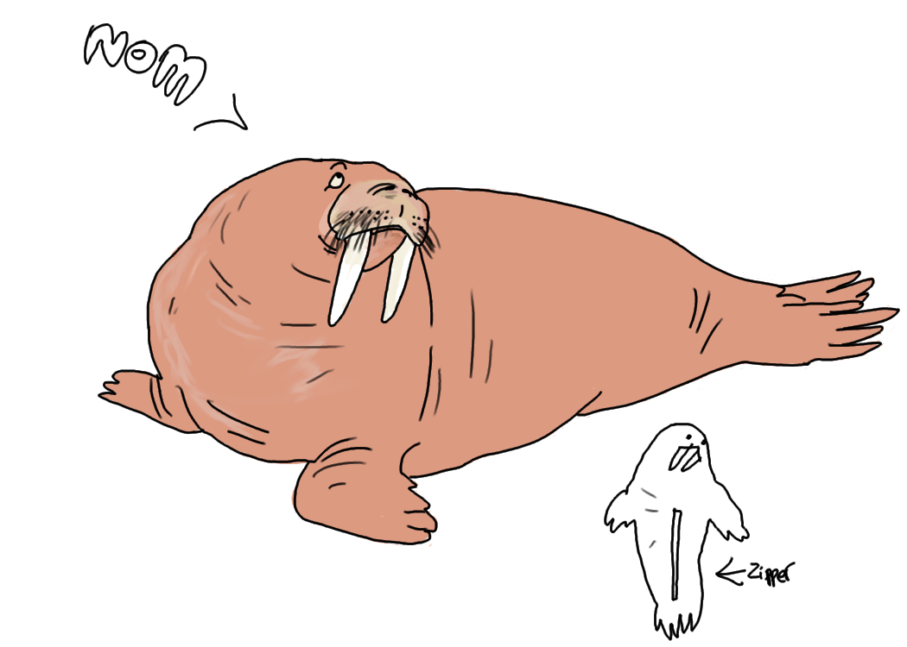

Peek-a-boo is an ancient game riddled in mystery and deceit. Though it appears to be an innocent children's pastime, you may change your mind when you learn of its treacherous history.
What a cute walrus! Click here to hide her again.
Walruses have large, flabby bodies covered in brown or pink skin. Short fur covers most of their bodies except for their fins. Their faces feature two small eyes, a mustache and two long tusks. Walruses weigh from 600 to 1,500 kilograms (1,320 to 3,300 lbs.) and can be as long as 3.2 meters (10.5 feet), according to the Animal Diversity Web (ADW), a database maintained by the Museum of Zoology at the University of Michigan. Males are about twice as big as females, have longer and thicker tusks, and usually have thicker skin. Walrus tusks can grow up to 3 feet (1 m). The tusks are canine teeth and stick out from either side of the animal's mouth. Walruses use their tusks to break through ice, and to assist in climbing out of the water and onto the ice. The animals also use their tusks to defend themselves from larger predators and to establish dominance and a hierarchy among walruses, according to the ADW.
Most walruses live in frigid waters near the Arctic Circle. They prefer areas with shallow water so they can easily access food, according to the ADW. Walruses climb up on ice or beaches to sleep or to rest. They don't move quickly on land but are swift in the water. Walruses can swim on average around 4.35 mph (7 km/h) and as fast as 21.74 mph (35 km/h), according to the MarineBio Conservation Society. A group of walruses is called a herd. They gather by the hundreds to sunbathe on the ice. During mating season, walruses amass by the thousands. A herd is usually segregated by gender; females have their own herds, and males have their own herds. The dominant males are chosen by age, body size and tusk length. Walruses are very fat, but for good reason. Their blubber keeps them warm in frigid waters. These animals can also slow their heart rates, which allows them to live in freezing temperatures, according to National Geographic.
Walruses are carnivores, but they aren't ferocious hunters. The walrus' favorite food is shellfish. They dive underwater and use their whiskers to detect the shellfish in the dark waters of the ocean. According to the Smithsonian Institution's Arctic Study Center, a walrus can eat up to 4,000 clams in one feeding. When food is hard to come by, walruses will also eat the carcasses of dead seals.